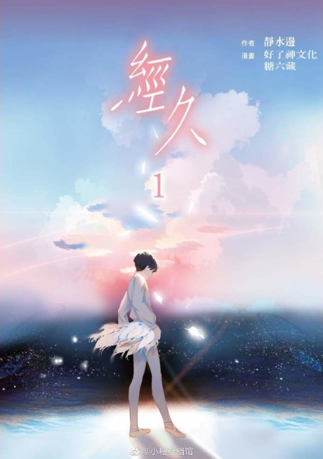
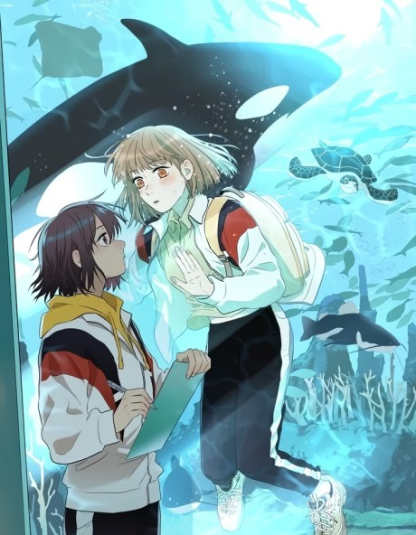
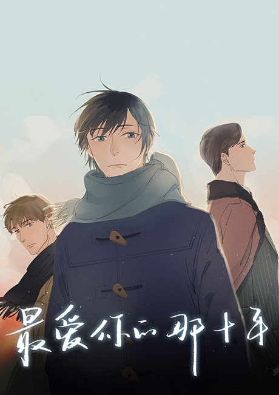
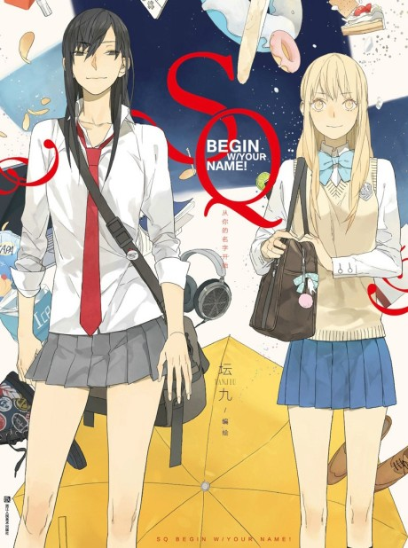
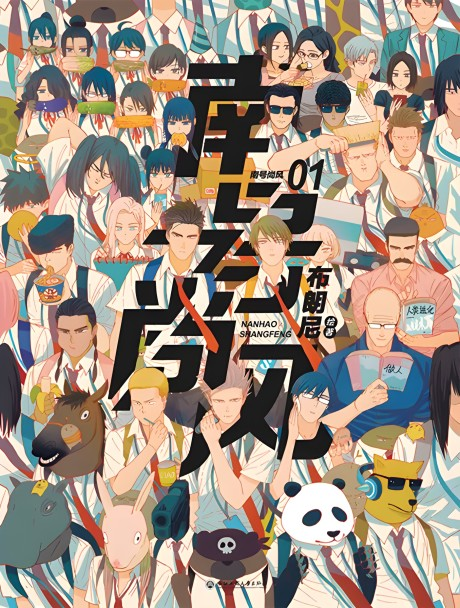
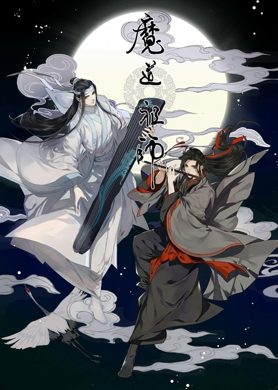
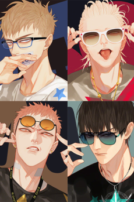
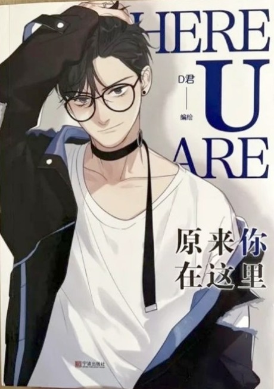
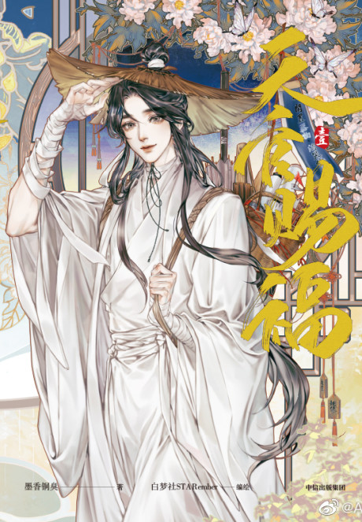

The top 10 Manhua
These are the top 10 Manhua as of 2023.

Author:
Ye XiaoGenre:
Action, FantasyRelease day:
April 5, 2019Anime Adaptation:
NoDescription:
As the Demon King, Yifan Zhuo uses his knowledge and power, collected over millennia, to defeat all foes, until the day he is betrayed. With his last breath, the demon king manages to reincarnate... but into the body of a puny young servant! To Yifan's dismay, the servant has a spirit bond with his mistress, Lady Luo. Yifan, now known as Fan, finds himself inexplicably drawn to Lady Luo and links his fate to her family. With Lady Luo at his side, will he regain his place as the Demon King?

Author:
Jingshuibian (Story), Tangliuzang (Art)Genre:
Boys Love, DramaRelease day:
October 2, 2019Anime Adaptation:
NoDescription:
Known as “the little swan” of his ballet studio, Shen has big dreams of leaving the humble farming town he grew up in and shooting to stardom. Though soft-spoken and timid, he meets his match in the stoic, wealthy, and equally as intense Jinyi, who pursues boxing next door. An unlikely pair, they cheer each other on and raise each other up through thick and thin. Determined to achieve their separate ambitions in the midst of their personal troubles, will their deep connection be strong enough to endure the journey and take flight?

Author:
Ke Ran Bing (Story), Wenzhi Lizi (Art)Genre:
Comedy, Drama, Romance, Slice Of LifeRelease day:
January 16, 2020Anime Adaptation:
NoDescription:
Qi went to sleep embraced by her girlfriend, Yuanzi. However, when she opened her eyes she realized that she had been transported 10 years back to the past, back when she was still in high school. While she sees this as an opportunity to save the love of her life, what she doesn't realize is that her teenage self is in her adult body, 10 years into the future, and has no clue about the life Qi has built or how precious the time she has left with Yuanzi is. No matter the time, no matter the age, their love resonates as they stand by each other's side. Will they be able to conquer fate?

Author:
EUNGenre:
Drama, RomanceRelease day:
September 23, 2018Anime Adaptation:
NoDescription:
Lewis He and Adolph Jiang have been a couple for some time. What started as a beautiful, loving relationship characterised by respect and trust now only feels one-sided and “wrong” to Lewis. When he thinks of Adolph, his heart aches. Thus, one sunny afternoon, he decides to do something long overdue: he takes his coat and leaves. He doesn’t want to spend the little time he has left because of his cancer thinking about the good old times. His doctor, Doctor Ivan Ai, lovingly comes to his aid: he takes Lewis in and shows him what it really means to enjoy life.

Author:
Tanjiu (Story & Art)Genre:
Comedy, Girls Love, Slice of LifeRelease day:
October 5, 2015Anime Adaptation:
NoDescription:
Sun Jing has a massive crush on a girl she sees at the bus station—feminine, blonde, and absolutely adorable, Qiu Tong is everything Sun Jing desires. But the tomboyish, outgoing Sun Jing cannot bring herself to utter a single word in Qiu Tong's presence. Once she musters up the courage, however, Sun Jing successfully introduces herself and secures a friendship with the cute girl. Although they are only friends for now, Sun Jing will do anything to see Qiu Tong smile; and with her genuine kindness, she might just win Qiu Tong's heart.

Author:
Brownie (Story & Art)Genre:
ComedyRelease day:
January 20, 2019Anime Adaptation:
NoDescription:
A comedy about two ordinary high school boys and the fujoshi classmate (who is also one of the boys' crush) who loves shipping them.

Author:
Mo Xiang Tong Chou (Story), Luo Di Cheng Qiu (Art)Genre:
Action, Romace, Adventure, ComedyRelease day:
December 8, 2017Anime Adaptation:
NoDescription:
The story happened in a cultivational world. Wei Wuxian, the master of diabolism, died as a bloody and cursed man and had reborn as a moron. Only his soulmate, Lan Wangji recognized him. The two decided to uncover a dark mystery in the past related to Wuxian's death, and uphold justice together. Would they succeed and truly find their happiness?

Author:
Old Xian (Story & Art)Genre:
Boys Love, ComedyRelease day:
October 19, 2018Anime Adaptation:
YesDescription:
A group photo in kindergarten is the start of a lifetime friendship between Jian Yi and Zhan Zhengxi. They grew up together, and met good friends like He Tian and Mo Guanshan on campus. "19 Days" not only shows the relaxed and happy school days of the four, but is also a story in which the boys come to understand each other and help each other grow up.

Author:
D Jun (Story & Art)Genre:
Boys Love, Drama, Slice of LifeRelease day:
November 22, 2017Anime Adaptation:
NoDescription:
Yang Yu is a second-year university student who seems reliable and pleasant. With the commencement of a new term, he is tasked with orienting every freshman he sees on campus. Eventually, his duty leads him to meet Huan Li, a new student with a fairly oppressive height. Besides his intimidating physique, he is taciturn, aloof, and often gives Yang Yu the cold shoulder. Yang Yu, who has done nothing but assist him, immediately grows frustrated by this treatment. However, despite his initial impressions, Yang Yu believes that his chance encounter with Huan Li will transform his future outlook—perhaps even on the prospect of love.

Author:
Mo Xiang Tong Xiu (Story), STARember (Art)Genre:
Action, Adventure, Boys Love, Drama, SupernaturalRelease day:
October 19, 2019Anime Adaptation:
Yes (Heaven Offical's Blessing)Description:
800 years ago, Xie Lian was a pure-blooded and noble Crown Prince, a well-regarded child of Heaven with unlimited potential. But who knew that, after he ascended and became a god with tens of thousands of worshippers, his fate would take such a sharp downhill turn? He was demoted again and again, and fell to rock bottom. 800 years later, Xie Lian ascended again, but this time, without worshippers or and without incense. One day, after returning from collecting scraps, he took a mysterious young man home. And this young man was the Ghost King that made others pale in fear whenever discussed—Hua Cheng.